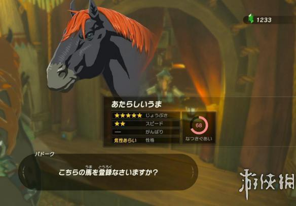
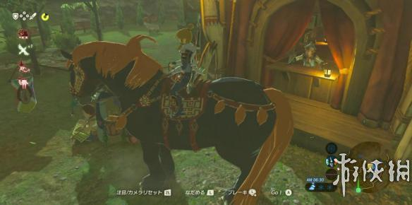
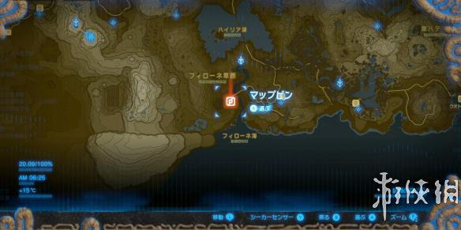
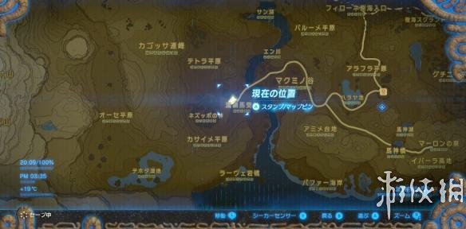

在塞尔达传说荒野之息里，能捕获很多类型的马匹，今天小编就为大家带来塞尔达传说荒野之息巨大马捕获方法，感兴趣的朋友快来看看吧！
巨大马捕获方法
塞尔达传说 荒野之息里有一种巨大的马。特点是：
太tm大了!
问题是：没有耐力槽，无法加速……
不过因为体型大，它普通奔跑的速度也不比其他马慢，长途赶路说不定还有点优势。而且这匹马皮糙肉厚，普通奔跑带撞击判定，非常“霸道”。


捕获这匹巨大马的方法如下：
建议带上恢复耐力的药品、料理，个人情况：两圈耐力，不够用。来到如图所示位置，世界地图南部，和 NPC 对话，开启捕获巨大马的任务。

